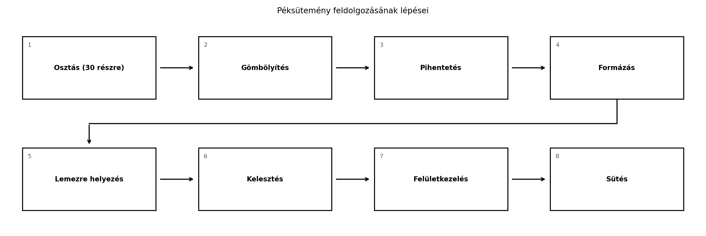

Egy pékségben a hajnali műszakban a pék megkapja a már bedagasztott, érett tésztát, és elkezdi a péksütemények feldolgozását. A tételből vizes zsemle, tejes kifli és császárzsemle készül. A munka során a tésztát azonos tömegű darabokra kell osztani, meg kell formázni, lemezre kell helyezni, majd keleszteni, felületkezelni és megsütni. Ha bármelyik lépésnél hibázik – például túl kicsire osztja a darabokat, száraz kamrában keleszt, vagy forró kemencébe veti a terméket –, a végeredmény kicsi, repedezett, sápadt vagy túlsült péksütemény lesz. Ebben az alfejezetben azt tanuljuk meg, hogyan kell egy péksütemény-tételt az osztástól a kisütésig biztonságosan, ellenőrzötten és jó minőségben végigvinni.
A péksütemény feldolgozás folyamata jól átlátható egy egyszerű láncolattal: a tészta előbb darabokra oszlik, majd gömbölyítés és pihentetés után formát kap, lemezre kerül, kelesztőkamrában megkel, végül felületkezelés után megsül. A lépések sorrendje hibakereséskor is fontos: ha a késztermék hibás, a folyamatábrán visszafelé haladva keressük az okot.

A folyamat minden eleméhez ellenőrzési pont tartozik: osztáskor a darabtömeg, formázáskor a forma és a tésztafeszültség, kelesztéskor a megkeltség jelei, sütéskor az átsültség. A rajz segít megjegyezni, hogy a felületkezelést a kelesztés után, közvetlenül a vetés előtt végezzük.
Definíció. A péksütemény feldolgozása a tészta osztásából, gömbölyítéséből, pihentetéséből és formázásából áll. Az osztás a tészta egyenlő tömegű darabokra bontása, a gömbölyítés a darab feszességét és zárt felületét adó művelet, a pihentetés a formázás előtti rövid relaxáció, a formázás pedig a termékre jellemző alak kialakítása.
A présgép általában 30 egyenlő részre osztja a betöltött tésztát. A préstömeget a Feladási tömeg, préstömeg és osztási számítások alfejezetben tanult módon számítjuk: a feladási tömeget megszorozzuk 30-cal, és hozzáadjuk a présmaradékot, ha van.
Számítás. Példa: ha egy vizes zsemle feladási tömege 56 g, akkor a préstömeg présmaradék nélkül:
A présgép betöltése előtt a tésztát lisztezett felületen nyújtsuk meg, hogy a gép egyenletesen töltse a csészéket. A préselés után a darabokat gömbölyítő asztalon vagy kézzel gömbölyítjük. A gépi gömbölyítőben a darabok feszessége és zártsága a gép beállításától függ: túl hosszú gömbölyítés erős feszültséget ad, ami pihentetés nélkül szakadó felületet okoz. Kézi gömbölyítéskor a tenyeret enyhén kúposítva, körkörös mozdulattal dolgozunk, és a tészta felületét alul zártan tartjuk.
A pihentetés általában 10–20 perc, tanulási példa (ellenőrizendő: üzemi technológiai lap), és célja a glutén relaxációja. Ezalatt a tészta felülete enyhén szárad, ezért letakarással vagy párakamrában védjük a bőrösödéstől. A pihentetés után a darabokat formázzuk: vizes zsemle esetén gömbölyítéssel, kiflinél sodrással, császárzsemlénél lemezes mintázással, ahogyan a gépi formázókról szóló Süteménytészta-osztók, formázó- és sodrógépek alfejezetben olvashattuk. A kézi formázásnál a tésztafelületet ne szakítsuk meg: a nyújtás iránya mindig a gluténszálakkal párhuzamos legyen, a tészta alját mindig zárjuk le.
A formázott darabokat lemezre helyezzük, ügyelve a távolságra. A péksütemények kelesztés közben nőnek, ezért a lemezen 2–3 cm távolságot hagyunk közöttük. A lemezt előzőleg tisztítsuk meg, és szükség szerint vékonyan lisztezzük vagy olajozzuk. A sütőpapír használata megkönnyíti a lemezváltást, de figyelni kell arra, hogy a papír ne gyűrődjön, mert a nedves tészta belenyomódik.
Higiénia. A tésztafeldolgozó asztal, a présgép csészéi, a gömbölyítő és a formázó eszközök minden tétel előtt tiszták és fertőtlenítettek legyenek. A kézmosás a tészta érintése előtt elengedhetetlen. A lehullott tésztát ne tegyük vissza, mert idegen anyaggal szennyeződhet, és a HACCP-terv szerint hulladék.
Gépbiztonság. A présgépet, gömbölyítőt és formázógépet csak betanított személy kezelheti, felügyelettel. A védőburkolatot, reteszelést tilos kiiktatni. Bármilyen beavatkozás (tisztítás, tésztadarab eltávolítása a csészéből) csak leállított, áramtalanított és újraindítás ellen biztosított gépen történhet. A forgó görgők, kiflisodró szalagok közé nyúlni tilos.
A kelesztés a formázott darabok térfogatnövekedése az élesztő és a kovász által termelt szén-dioxid és egyéb gázok hatására. A péksütemények kelesztése az A kelesztés célja, feltételei és folyamatai alfejezetben tanultak szerint történik, de a paraméterek termékcsoportonként eltérnek.
Definíció. A kelesztés három fő paramétere a hőmérséklet (jele: , °C), a relatív páratartalom (jele: , %) és az idő (jele: , perc). Ezek beállítása határozza meg a gáztermelés sebességét, a tészta felületének rugalmasságát és a végső térfogatot.
Táblázat: Péksütemény-tészták kelesztési paraméterei (tanulási példa, ellenőrizendő üzemi technológiai lappal)
| Tésztaféle | Hőmérséklet (°C) | Relatív páratartalom (%) | Kelesztési idő (perc) | Megjegyzés |
|---|---|---|---|---|
| Vizes tészta (zsemle, kifli) | 28–32 | 70–80 | 30–50 | A Vizes tészta és vizes tésztából készült péksütemények értékeivel egyezik |
| Tejes tészta (tejes kifli, tejes zsemle) | 28–32 | 70–80 | 30–50 | A Tejes tészta és tejes tésztából készült péksütemények értékeivel egyezik |
| Dúsított tészta (fonott kalács) | 32–36 | 75–80 | 45–70 | A Dúsított tészta, dúsított péksütemények és kalácsfélék értékeivel egyezik; vajas, nagy zsírtartalmú tésztánál alacsonyabb hőmérséklet is lehet |
A táblázatban szereplő értékek tanulási példák, és tésztaösszetételtől, lisztminőségtől, élesztőmennyiségtől és a kelesztőkamra teljesítményétől függően eltérhetnek (ellenőrizendő: a pékség technológiai lapja vagy a kelesztőkamra gyártói adatlapja).
A kelesztőkamra beállítása előtt ellenőrizni kell a kamra hőmérsékletét és páratartalmát. A hőmérsékletet beépített vagy hitelesített kézi hőmérővel, a páratartalmat higrométerrel mérjük. A kamra ajtaját ne nyitogassuk feleslegesen, mert a pára és a meleg eltávozik, és a tésztafelület bőrösödik. A kelesztés közbeni ellenőrzés a megkeltség jelei alapján történik: a darabok térfogata nő, a felület rugalmas, és óvatos ujjbenyomásra a benyomódás lassan, de részben visszaalakul. Ha a benyomódás azonnal visszaugrik, a tészta még alul kelt; ha a benyomódás nem alakul vissza, a tészta túlkelt.
Hiba. Ha a kelesztőkamra páratartalma túl alacsony, a tésztafelület bőrösödik, és a sütés közben repedezik. Ha túl magas, a felület ragacsossá válik, és a termékek összetapadhatnak. A hőmérséklet túl alacsony értéke lassú kelést, hosszú időt ad; túl magas értéke savanyú, élesztős ízt és gyors, de egyenetlen gáztermelést okozhat.
HACCP. A kelesztési idő és hőmérséklet nem klasszikus kritikus szabályozási pont, de a túl hosszú kelesztés mikrobiális kockázatot növelhet, különösen dúsított, tejjel és tojással készült tésztáknál. A kelesztési időt dokumentáljuk, és a termék belső hőmérsékletét sütés után ellenőrizzük. Ha a kelesztés hűtőben, késleltetve történik, a hűtő hőmérséklete kritikus pont, lásd a Késleltetett és megszakított kelesztés alfejezetben. A hűtő hőmérsékletét naplózni kell (ellenőrizendő: a pékség HACCP-terve).
A kelesztés végén, közvetlenül a sütés előtt a termékek felületét kezeljük. A cél a héj színének, fényének és mintázatának kialakítása, valamint a szórt anyagok tapadásának biztosítása.
Definíció. A mosdatás a tésztadarab felületének vékony folyadékréteggel való bevonása; a szórás szilárd anyagok (mák, szezám, kömény, sajt, liszt) rászórása; a vágás a tészta felületének éles késsel vagy pengével való bemetszése, amely a sütés közbeni irányított tágulást és a jellegzetes héjmintát adja.
A mosdatáshoz leggyakrabban vizet, tojást, tejet vagy ezek keverékét használjuk. A vizes mosdatás egyszerű, a tojásos kenés fényes, aranyszínű héjat ad. A tojásos kenésnél a tojást átszűrve, villával elkeverve visszük fel, hogy a tojás fehérjéje ne csomósodjon. A tejes mosdatás gyakran karamellizálódik, és sötétebb héjat eredményez.
Allergén. A tojásos, tejes kenés allergént visz be a termékbe, még akkor is, ha a tészta maga nem tartalmaz tojást vagy tejet. A felhasznált kenőanyagot a termék jelölésénél fel kell tüntetni, és a keresztszennyeződés megelőzése érdekében külön edényt, ecsetet kell használni. Az adott allergént nem tartalmazó termékeket tiszta, elkülönített eszközzel kell kezelni (a teljes kizárást ez sem garantálja).
A szórást a mosdatás után azonnal végezzük, mert a nedves felülethez tapad a mák, szezám vagy kömény. Száraz felületre a magvak nem tapadnak, lerázódnak, és a kemencében leéghetnek. A szórt magvak között allergén is van (a szezám az 1169/2011/EU rendelet II. mellékletében szereplő 14 allergén egyike – ellenőrizendő: hatályos melléklet; a mák nem tartozik a kötelezően kiemelendő allergének közé, de érzékenység előfordulhat), ezért a szórás előtt ellenőrizni kell a termékjelölést, és a szórt anyagot a gyártási dokumentációban rögzíteni kell.
A vágást éles, rozsdamentes pengével vagy kiflivágóval végezzük. A vágás mélysége terméktől függ: zsemle esetén 0,5–1 cm, kiflinél gyakran hosszanti bemetszés, császárzsemlénél a mintát a formázógép már kialakította, de további vágás nem szükséges. A vágás iránya befolyásolja a sütés közbeni kemencerugást (oven spring), ezért a vágásokat határozottan, egyenletes mélységben kell kialakítani.
Figyelem. A penge éles, a vágásnál a kéz elcsúszhat. A vágóeszközt használat után biztonságos helyre, tokba kell tenni, tisztításkor a penge irányába nem szabad kézzel mozdulni. A tésztadarabot a másik kézzel nem tartjuk a vágás vonalában.
A három művelet sorrendjét és fogásait az alábbi képsor foglalja össze: az 1. kocka a mosdatás, a 2. a szórás, a 3–4. a zsemle és a kifli bevágása; az utolsó két kocka a vágás biztonsági párja.
Figyeld meg, hogy a mosdatás és a szórás között nincs várakozás: a 2. kockán a mag még nedves felületre hull. A tojás és a tej (1. kocka) és a szezám (2. kocka) allergén, ezért külön ecset, tál és kanál tartozik hozzájuk. A HTML-kiadásban a képsor lépésenként lejátszható.
A péksüteményeket általában sütőlemezen sütjük. A lemezt a kemencébe vetés előtt meg kell tölteni a formázott és kelesztett darabokkal, majd a kemence hőmérsékletét és gőzölését beállítani.
Definíció. A vetés a tésztadarabok kemencébe helyezése; a gőzölés a kemence sütőterébe adagolt vízgőz, amely a sütés kezdeti szakaszában rugalmasan tartja a héjat, és fényes felületet ad; a kisütés az átsült termék kiszedése a sütőtérből; akkor végezzük, amikor a bélhőmérséklet elérte a határértéket (legalább 96 °C, tanulási példa) és a héj színe megfelelő.
A sütési hőmérséklet és idő termék- és kemencefüggő. Tájékoztató tanulási példák:
Ellenőrzés. A sütési hőmérsékletet a kemence hőmérőjén, a belső hőmérsékletet maghőmérővel ellenőrizzük. A bélhőmérséklet elérése az átsültség alapfeltétele. A kész péksütemény héja egyenletes, a bél elvágva nem ragacsos, a tésztafal jól kialakult.
HACCP. A sütés kritikus szabályozási pont lehet, ha a termék mikrobiális biztonsága a hőkezelésen múlik. A sütési hőmérsékletet, időt és a maghőmérsékletet dokumentálni kell. A maghőmérséklet elérése a 96–98 °C tartományt tanulási példa, és a konkrét termékre a pékség HACCP-terve határozza meg a határértéket (ellenőrizendő: HACCP-terv). Túl alacsony maghőmérséklet esetén a termék átsületlen, a bél nedves, ragacsos, és romlási kockázatot hordoz. Az akrilamid képződésének csökkentése érdekében a sütőipari termékeket ne süssük túl sötétre, a hosszú idejű, magas hőmérsékletű sütést kerüljük (ellenőrizendő: (EU) 2017/2158 rendelet és NÉBIH útmutatók).
Gyakorlat. A sütőlemezt a kemencébe olyan sorrendben helyezzük, hogy a sütési idő alatt a lemezeket ne kelljen feleslegesen mozgatni. A gőzölés a vetés után azonnal történik, hogy a héj kialakulását késleltesse. A gőz mennyisége és időtartama a kemence típusától függ; a túlzott gőzölés sápadt, puha héjat, a gőz hiánya matt, száraz héjat eredményez. A sütés alatt a kemence ajtaját csak indokolt esetben nyissuk ki, mert a hőmérséklet-ingadozás a termék összeesését okozhatja.
Minden péksütemény-tételhez gyártási dokumentációt kell kapcsolni. Ez tartalmazza a tétel azonosítóját, a termék megnevezését, a receptúrát, az anyagok tételazonosítóit, a dagasztás és kelesztés paramétereit, az osztási tömeg ellenőrzésének eredményét, a sütési paramétereket és a minőségi ellenőrzés adatait.
A gyártási dokumentáció a nyomonkövethetőség alapja, és a HACCP-dokumentáció részét képezi. A gyártási naplóba bejegyzendő legalább: a gyártás időpontja, a tészta tömege, a feladási tömeg és a mért átlag, a kelesztési hőmérséklet és idő, a sütési hőmérséklet, a maghőmérséklet, a késztermék tömege és a minősítés eredménye. A bejegyzéseknek utólag is követhetőnek kell lenniük, ezért a pék aláírásával és dátumával zárulnak.
Példa. Egy tétel vizes zsemle gyártási naplója: - Tételszám: ZS-2025-04-08-1 - Feladási tömeg: 56 g; mért átlag: 56,3 g - Présgép: 30 részre; préstömeg: 1,71 kg (présmaradékkal) - Kelesztés: 30 °C, 75% relatív páratartalom, 40 perc (a vizes tészta táblázatos tartományán belül) - Sütés: 230 °C, 16 perc, maghőmérséklet 96 °C - Késztermék átlagos tömege: 49,8 g - Megjelenés: egyenletes héj, megfelelő szín - Ellenőrizte: K. J. pék
Megjegyzés. A dokumentáció értéke akkor derül ki, ha reklamáció vagy hatósági ellenőrzés történik. Ha nincs gyártási napló, a termék visszahívása és a hiba okának felderítése is nehéz.
Egy kisvárosi pékségben a hétvégi műszakban a pék a szokásos vizes zsemle tételt készítette. A kelesztőkamra hőmérsékletét 32 °C-ra állította, de a páratartalom-mérő nem működött, ezért a kamra száraz volt. A tészta felülete bőrösödött, a formázáskor a zsemlék repedeztek. A pék a kamra ajtaját folyamatosan nyitogatta, hogy ellenőrizze a kelést, ami további páravesztést okozott. A sütés után a zsemlék felülete ráncos, szakadt lett, a héj száraz. A hibát úgy javították, hogy a páratartalmat higrométerrel ellenőrizték, és a kamrába vízpermetet juttattak; a következő tételnél a zsemlék egyenletesen keltek. A tanulság: a kelesztési paraméterek mérése és dokumentálása nem felesleges adminisztráció, hanem a termékminőség alapja.
Cél: Egy péksütemény-tétel feldolgozása az osztástól a kisütésig, 30 darabos présgéppel, tejes kifli terméknél.
Eszközök és anyagok: Présgép (30 részre), gömbölyítő asztal, kiflisodrógép vagy kézi sodró, lemezek, sütőpapír, éles kés, mosóvíz/tojás, szóróanyag, kelesztőkamra, kemence, maghőmérő, digitális mérleg, tészta hőmérő, gyártási napló.
Higiénia. Munkaruha tiszta, hajháló, ékszer nélkül; kézmosás a munka megkezdése előtt; minden eszköz és gépfelület tiszta, fertőtlenített. Fertőző betegség esetén a tanuló nem dolgozhat.
Gépbiztonság. A présgépet, gömbölyítőt és kiflisodrógépet csak betanított személy kezeli, felügyelettel. Üzem előtti szemle: védőburkolatok, reteszelések, vészleállító gombok. Tisztítás és beavatkozás csak leállított, áramtalanított, újraindítás ellen biztosított gépen.
Lépések:
Ellenőrzési pontok: - A préselt darabok átlagos tömege a feladási tömeg ±2–3%-án belül legyen. - A kelesztés után a felület rugalmas, nem bőrös. - A sütési maghőmérséklet eléri a 96–98 °C-ot. - A kész kifli héja egyenletes, a bél elvágva nem ragacsos.
Tipikus hibák: - A tészta túl hideg, ezért a kelesztés lassú. - A présgép csészéi nem egyenletesen töltődnek, ezért a darabok szórása nagy. - A kelesztőkamra páratartalma alacsony, ezért a felület bőrösödik. - A tojásos kenés túl vastag, ezért a héj sötét, esetleg keserű.
Dokumentálás: A gyártási naplóba beírjuk a tételazonosítót, a préstömeget, a mért átlagot, a kelesztési és sütési paramétereket, az észlelt eltéréseket és az ellenőrző aláírását.
Termék: Tejes kifli (péksütemény) Késztömeg: 58 g/db (tanulási példa; ellenőrizendő üzemi technológiai lap) Darabszám: 30 db/tétel Tésztatömeg: kb. 1,95 kg (feladási tömeg × 30)
Receptúra-táblázat (tejes kifli, 30 darabhoz)
| Nyersanyag | Lisztre vetített % | Mennyiség (g) | Megjegyzés |
|---|---|---|---|
| Búzaliszt BL 80 | 100 | 1116 | szobahőmérsékletű |
| Víz | 55 | 614 | kb. 25 °C, a dagasztóvíz számítása a Tésztahőmérséklet és dagasztóvíz számítása alfejezet szerint |
| Tejpor | 5 | 56 | vízben elkeverve vagy a lisztre szitálva |
| Sütőélesztő | 4 | 45 | friss |
| Só | 1,8 | 21 | jódozott |
| Cukor | 3 | 35 | kristály |
| Margarin vagy vaj | 6 | 67 | szobahőmérsékletű |
| Tojás (kenéshez) | — | 25 | átszűrve, villával elkeverve |
| Összes tészta | 174,8 | 1951 | a kenőtojás nincs a tészta összegében |
Megjegyzés: A lisztre vetített százalékok összege a tészta lisztre vetített tömege, ami 174,8%, tehát 1000 g lisztből 1748 g tészta keletkezik. A 30 darabhoz szükséges 1950 g tészta (30 · 65 g) ezért a receptúra 1,95/1,748 = 1,116-szoros skálázását igényli (a táblázat a kerekített mennyiségeket mutatja, összegük 1951 g). Ez a tejporos, vízzel hígított változat, amely a Tejes tészta és tejes tésztából készült péksütemények alfejezet tejes receptjétől (friss tej, TA ≈ 160) elkülönül; a tejpor a folyadékot nem adja, ezért a TA itt 155, a vizes tészta tartományában. A kenéshez használt tojás nem része a tészta össztömegének, de a késztermék allergénjeit növeli.
Műveleti paraméterek: - TA: 155 (liszt + víz); tésztahozam: 174,8 kg/100 kg liszt - Dagasztás: spirálos dagasztó, lassú fokozat 4 perc, gyors fokozat 6 perc, tésztahőmérséklet 26–28 °C - Pihentetés: 15 perc letakarva - Feladási tömeg: 65 g/db - Formázás: kiflisodrógép vagy kézi sodrás, hossz 12–14 cm - Kelesztés: 30 °C, 75% relatív páratartalom, 40 perc (tanulási példa) - Felületkezelés: tojásos kenés, szezámszórás, hosszanti bemetszés - Sütés: 225 °C, 15 perc, enyhe gőzölés a vetéskor, maghőmérséklet 96–98 °C - Hűtés: rácson szobahőmérsékletre
Allergén. Búzaliszt (glutén), tejpor (tej), margarin (tej vagy szójalecitin, ellenőrizendő), tojás a kenésből, szezám a szórásból. A keresztszennyeződés megelőzése érdekében a tojásos kenést elkülönített edényben készítsük, és a szezámos termékeket ne érintkeztesse más, nem szezámmal szórt termékekkel. A gluténmentes termékeket külön gyártósoron kell kezelni, ha ilyen állítást teszünk.
HACCP- és minőségi pontok: - Nyersanyag-átvétel: a tojás és a margarin/vaj hőmérséklete, a tejpor csomagolásának épsége és szárazsága, minőségmegőrzési idők. - Sütés: maghőmérséklet 96–98 °C, idő 15 perc, dokumentálás. - Idegen anyag: a szezám szórása előtt szitálás, a tészta formázásakor a gép tésztadarabjainak ellenőrzése. - Késztermék minősége: héj egyenletes aranybarna, bél puha, elvágva nem ragacsos, tömege 58 g ± tűrés (ellenőrizendő: üzemi technológiai lap).
A kész péksütemény minőségi jellemzői:
A minőségellenőrzést gyártási tételenként legalább szúrópróbaszerűen végezzük el, és az eredményt a gyártási naplóban rögzítjük.
Alul kel, sűrű bélzet. Tünet: a péksütemény lapos, a bél tömött. Ok: túl rövid kelesztési idő, alacsony kelesztési hőmérséklet, vagy kevés élesztő. Megelőzés: tartsuk be a technológiai lapon előírt időt és hőmérsékletet, ellenőrizzük a megkeltséget ujjbenyomással.
Túlkelt, összeesett termék. Tünet: a darabok túl nagyra nőnek, a héj sápadt, a termék sütés közben összeesik. Ok: túl hosszú kelesztés, túl magas hőmérséklet, vagy túl sok élesztő. Megelőzés: a kelesztési időt pontosan mérjük; ha a tészta túl gyorsan kel, csökkentsük a hőmérsékletet, és hűvösebb helyen kelesztünk.
Bőrös, repedezett felület. Tünet: a héj ráncos, száraz, a formázási repedések megnyílnak. Ok: alacsony páratartalom a kelesztőben, huzat, a lemezre helyezett darabok letakaratlanok. Megelőzés: ellenőrizzük a kamra páratartalmát, tartsuk 70–85%-on, a pihentetett tésztát takarjuk le.
Túl sötét, keserű héj. Tünet: a héj sötétbarna, néhol égett, keserű íz. Ok: túl magas sütési hőmérséklet, túl hosszú sütési idő, vagy vastag tojásos kenés. Megelőzés: a sütési hőmérsékletet és időt kövessük, a kenőanyagot vékonyan vigyük fel, és a sütés vége felé ellenőrizzük a színt.
Szakadt vágás, szétterülő termék. Tünet: a vágás mentén a tészta túlságosan megnyílik, a forma szétterül. Ok: túl mély vágás, túl lágy tészta, túl hosszú kelesztés. Megelőzés: a vágás mélységét mérsékeljük, a tésztát megfelelő feszességgel formázzuk, és a kelesztést időben leállítjuk.
Egy vizes zsemle feladási tömege 56 g. Számítsa ki a préstömeget 30 darabhoz, présmaradék nélkül, kg-ban kifejezve.
Sorolja fel a péksütemény feldolgozásának lépéseit az osztástól a sütésig.
Egy tejes kifli tételben a préselt darabok átlagos tömege 67 g, a feladási tömeg 65 g. Hány grammal kell csökkenteni a préstömeget a következő préseléskor, hogy az átlag elérje a 65 g-ot? (Tételezzük fel, hogy a présmaradék azonos.)
Egy pékségben a kelesztőkamra hőmérséklete 24 °C, a relatív páratartalom 60%. A tejes kifli kelése lassú, a felület száraz. Milyen beállítást módosítson a pék, és milyen javulás várható?
Egy tétel császárzsemle sütése után a termék héja sápadt, a bél kissé ragacsos. A sütési hőmérséklet 200 °C volt, az idő 12 perc. Mi lehet a hiba? Milyen ellenőrzéseket végezzen, és hogyan javítson?
A gyakorlati útmutató alapján készítsen gyártási naplót egy 30 darabos tejes kifli tételhez a megadott paraméterekkel, és jelölje a kritikus pontokat.
Képlet: . Behelyettesítés: . Ellenőrzés: 30 darab során 1,68 kg tészta oszlik el.
A lépések: osztás → gömbölyítés → pihentetés → formázás → lemezre helyezés → kelesztés → felületkezelés (mosdatás, szórás, vágás) → sütés → hűtés.
A mért átlag 2 g-mal több a feladási tömegnél. A korrekció a Feladási tömeg, préstömeg és osztási számítások alapján: . Tehát a préstömeget 60 g-mal csökkenteni kell. Ellenőrzés: a következő préseléskor az átlag 65 g körül várható.
A hőmérsékletet növelni kell 30 °C körülire (a 28–32 °C-os tartományba), a páratartalmat 75–80%-ra. A magasabb hőmérséklet gyorsítja az élesztő aktivitását, a nagyobb páratartalom megőrzi a felület rugalmasságát, megelőzi a bőrösödést, így a kifli jobban kel és sima felületű lesz.
A túl alacsony sütési hőmérséklet és a rövid idő miatt a termék nem sült át: a bélhőmérséklet valószínűleg nem érte el a 96–98 °C-ot. Ellenőrizze a maghőmérővel a bél hőmérsékletét. Javítás: növelje a sütési hőmérsékletet (pl. 220–230 °C-ra) és/vagy az időt, amíg a maghőmérséklet el nem éri a 95 °C-ot. A jövőben a sütési paramétereket dokumentálja.
A gyártási napló mintája a Gyakorlati útmutató Dokumentálás pontja szerint alakul: rögzíteni kell a tételazonosítót, a préstömeget, a mért átlagot, a kelesztési hőmérsékletet, páratartalmat, időt, a felületkezelés módját, a sütési hőmérsékletet, időt, maghőmérsékletet, a késztermék tömegét és a minősítést. Kritikus pontok: sütési maghőmérséklet, esetleg a hűtő tárolás, ha volt késleltetett kelesztés.
A péksütemények feldolgozása az osztástól a kisütésig jól szabályozott folyamat. A présgép 30 részre osztja a tésztát, a feladási tömeget a késztermék tömegéből számítjuk a veszteségek figyelembevételével. Az alakítás gömbölyítésből, pihentetésből és formázásból áll; a lemezre helyezés után a kelesztés következik, amelynek paraméterei (hőmérséklet, páratartalom, idő) tésztafüggőek: vizes tészta 28–32 °C, 70–80%, 30–50 perc; tejes tészta 28–32 °C, 70–80%, 30–50 perc; dúsított tészta 32–36 °C, 75–80%, 45–70 perc (tanulási példák, a kelesztési táblázat szerint). A felületkezelés mosdatásból, szórásból és vágásból áll; a tojásos kenés allergén. A sütés lemezen, maghőmérséklet-ellenőrzéssel történik, a 96–98 °C jelzi az átsültséget. A gyártási napló a nyomonkövethetőség és a HACCP-dokumentáció része. Továbbvitt eredmény: ezt a feldolgozási, kelesztési, felületkezelési és sütési logikát használjuk a Tojással dúsított tészta: briós és foszlós kalács alfejezetben, ahol a dúsított tészta kelesztési paraméterei és a sütési hőmérséklet beállítása hasonló, de a formázás és pihentetés speciális.